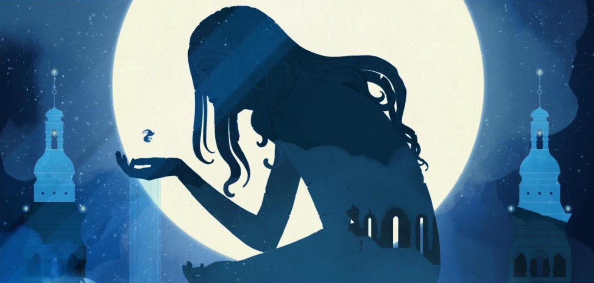

La industria del videojuego en España ha crecido enormemente en los últimos años,
convirtiéndose en un referente creativo a nivel internacional. Estudios españoles han sabido
combinar arte, historia y jugabilidad para crear experiencias únicas, asi es como grandes juegos en las industria como blasphemous o Gris han sido creados por estudios españoles.

Uno de los puntos fuertes de los videojuegos españoles es su identidad artística.
Títulos como GRIS destacan por su estilo visual y su narrativa emocional, demostrando que
los videojuegos también pueden ser una forma de arte.
DEV es como se le conoce al Desarrollo español de videojuegos
Actualmente, estudios como MercurySteam o Tequila Works siguen llevando el talento español
al siguiente nivel, desarrollando juegos para todo el mundo y demostrando el potencial del sector.
El futuro de los videojuegos en España es muy prometedor. Con cada vez más apoyo,
nuevos desarrolladores y una comunidad en crecimiento, el país se está consolidando
como una potencia dentro de la industria global del videojuego.